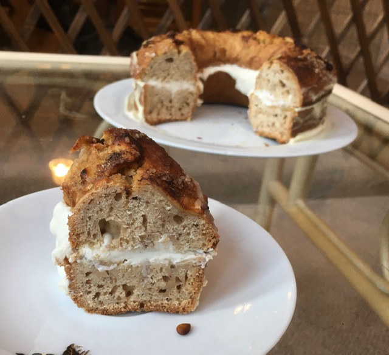

Maple and Honey Apple Cake
Ingredients:
-
11 tbsp of Apple Sauce/Puree
-
6 tbsp of Melted Coconut Oil
-
1 tbsp of Honey
-
2 tbsp of Maple Syrup
-
4 tbsp of Brown Sugar
-
5 tbsp of Plain Yogurt
-
1 Flax Egg
-
2 Cups of Plain Flour
-
1 tsp of Baking Powder
-
3/4 tsp of Baking Soda
-
1/2 tsp of Cinnamon
-
A Pinch of Salt
-
For Decoration: 1 Apple
-
Brown Sugar
-
1/2 tbsp of Cinnamon
-
250g of Oatly Creme Freche
-
1 tbsp + 1 tsp of Icing Sugar

Method:
-
Lightly grease up the cake pan.
-
Preheat the oven.
-
Mix all og the dry ingredients in one bowl. Not including the decoration ingredients.
-
In another bowl, mix all of the dry ingredients together.
-
Pour the wet ingredient mixture into the dry mixture and mix together well, but make sure not to mix
too much.
-
Pour in the mixture into the cake pan and spread evenly.
-
Chop or slice the apples and lay them out nicely on top of the cake.
-
Sprinkle the brown sugar and cinnamon on top of the apples.
-
Place the cake into the preheated oven for 40 minutes.
-
Let the cake cool fully before cutting it in half horizontally.
-
Mix together the creme freche and icing sugar in a bowl.
-
Spread the cream mixture on the bottom half of the cake and then place the top back on, like a
sandwich.
-
Place the finished cake into the fridge over night.